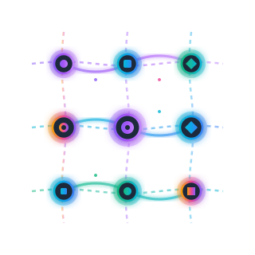

Conecta aplicaciones, automatiza flujos de trabajo y ahorra horas de trabajo manual con nuestra plataforma inteligente.
Todo lo que necesitas para automatizar tu trabajo
Activa automatizaciones en milisegundos. Sin demoras, sin esperas.
Conecta todas tus herramientas favoritas en un solo flujo de trabajo.
Workflows que aprenden y se adaptan a tus necesidades.
Arrastra, conecta y activa. Cada nodo representa una acción, cada conexión un flujo de datos en tiempo real.
Únete a miles de equipos que ya confían en NodeWeaver para automatizar sus procesos.
Crear cuenta gratis